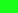
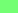
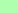

| 地区 | 面积 | 预测级别 |
|---|---|---|
| 武昌区 | 82.20平方千米 | 1 |
| 江汉区 | 33.43平方千米 | 2 |
| 江岸区 | 64.24平方千米 | 3 |
| 硚口区 | 41.90平方千米 | 4 |
| 青山区 | 49.20平方千米 | 4 |
| 汉阳区 | 108.4平方千米 | 5  |
| 洪山区 | 509.2平方千米 | 5 |
| 汉南区 | 287.1平方千米 | 6 |
| 东西湖区 | 495.5平方千米 | 6 |
| 蔡甸区 | 1093.5平方千米 | 7 |
| 新州区 | 1500.2平方千米 | 7 |
| 江夏区 | 2008.9平方千米 | 8 |
| 黄陂区 | 2261.1平方千米 | 8 |
| 区域类型 | 级别 |
|---|---|
| 良 好 | 1  2  3  |
| 区域类型 | 级别 |
|---|---|
| 良 好 | 1 2 3 |
| 薄 弱 | 1 2 3 |